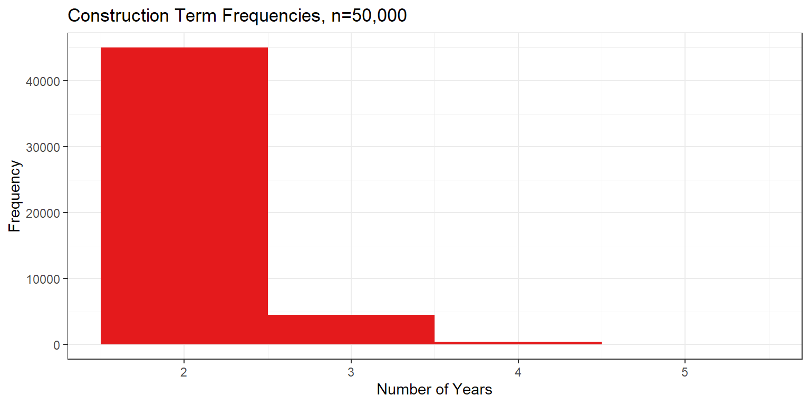
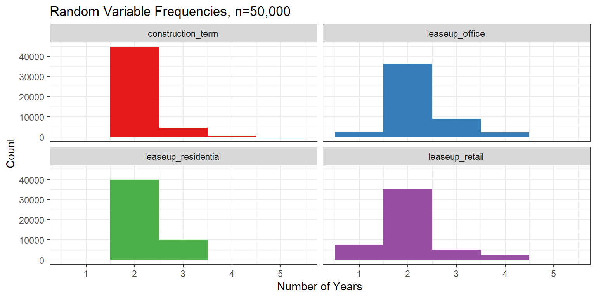
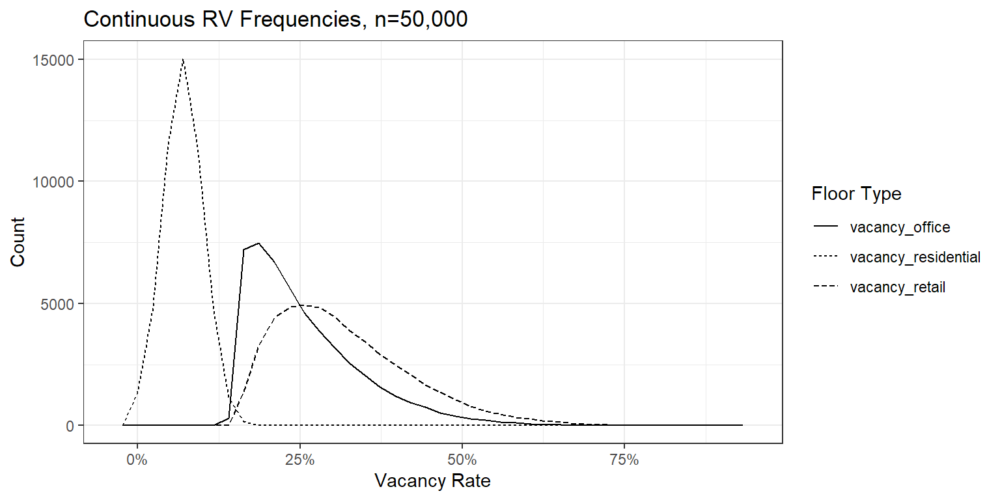

set.seed(1234) # helps me reproduce outcomes predictably
n = 50000 # number of rows
# store sample draws to dataframe
df <- tibble(
construction_term=sample(
2:5,
n,
replace=TRUE,
prob=c(0.9,0.09,0.009,0.001)
)
)I’m trying to build some functions that calculate how much a real estate project is worth. I want to re-run those functions a few (thousand) times to explore the impact of the values I think are better viewed as probabilistic. Here, I show my thought process in how I’m approaching these random values.
Introducing the unknowns
In my commercial real estate project, there are three main categories of values that might vary:
- Construction - how long construction and renovation in the building might take
- Lease-Up Period - how long we should expect it to take to reach stable vacancy rates
- Vacancy Rates - how much stable vacancy we should expect
We might expect renovations to take 2 years, with a lease-up period of 2 years until we reach a stable office vacancy rate of 15%. What if construction takes longer? What if the market is strong and we fill office leases within one year? What if a pandemic causes stable vacancy to be closer to 30%?
It would be prudent for any of my models to account for that uncertainty. I don’t know enough about real estate or the future make good estimates about how to represent the kind of uncertainty a commercial real estate project would face. Ideally, I would seek the opinions of experts with access to better information, but there’s no money on the line here, so I’ll make something up that seems close enough.
Modeling the unknowns: 2 approaches
I will use two different methods for generating random scenarios for the project. The first is using the sample() function, which lets me sample outcomes from a discrete set of outcomes and weights. The second is using distribution functions from the stats package to generate continuous data within some general parameters.
Discrete sampling for small sample spaces
For construction delays and lease-up periods, I am only dealing with small ranges of 0-5 years. To make things simpler, I am only modeling discrete integer outcomes. The accounting won’t care about half-years of construction; I will only consider construction “done” on the year it finishes.
Discrete samples can be drawn by giving vectors of outcomes and probability weights to the sample() function. This function assumes you are drawing without replacement so you will need to set replace = TRUE if you are repeating the same drawing multiple times.
Below is an example for modeling construction times. I estimate construction and renovation to take 2 years, with a roughly a 10% likelihood of a 1-year delay, a roughly 1% likelihood of a 2-year delay, and a 0.1% likelihood of a 3-year delay. We can simulate 50,000 outcomes of this sample like so:
Showing a histogram of these outcomes is going to show us what we expect: \({prob}*n\) instances of each outcome, more or less.
Code
fig_colors <- RColorBrewer::brewer.pal(7,'Set1')
df %>%
ggplot(data=.,aes(x=construction_term)) +
geom_histogram(
bins = length(unique(df$construction_term)),
fill=fig_colors[1]
) +
ggtitle('Construction Term Frequencies, n=50,000') +
xlab('Number of Years') +
ylab('Frequency') +
theme_bw()
I use the sample() function for the construction term as well as the lease-up periods for each of the three types of spaces: retail, office, and residential. Below are the distributions:
# store sample draws to dataframe
df <- tibble(
construction_term=sample(
2:5,
n,
replace=TRUE,
prob=c(0.9,0.09,0.009,0.001)
),
leaseup_office=sample(
1:4,
n,
replace=TRUE,
prob=c(0.05,0.8,0.2,0.05)
),
leaseup_residential=sample(
2:3,
n,
replace=TRUE,
prob=c(0.8,0.2)
),
leaseup_retail=sample(
1:4,
n,
replace=TRUE,
prob=c(0.15,0.7,0.10,0.05)
)
)This gives us the following distributions in Figure 1:
Code
df[1:4] %>%
pivot_longer(cols = everything()) %>%
ggplot(data=.,aes(x=value)) +
geom_histogram(bins = 5) +
facet_wrap(~name) +
aes(fill=name) +
scale_fill_manual(values=fig_colors[1:4]) +
guides(fill='none') +
ggtitle('Random Variable Frequencies, n=50,000') +
xlab('Number of Years') +
ylab('Count') +
theme_bw()
sample() columnsThis approach of sampling from a small set of outcomes works well when there are a few set outcomes possible. But what about a larger set of outcomes? What about continuous random variables?
Continuous sampling
The stats package in R contains many functions to handle distributions, including normal, Poisson, uniform, and binomial distributions. I want to use these to model potential outcomes for the three vacancy random variables: vacancy_retail, vacancy_office, and vacancy_residential. The retail and office vacancy RVs have the risk of being higher than we hope; there may be a recession or a pandemic that causes low occupancy for shops or offices. For these two values, I use a a beta distribution to model a right-skewed outcome space. Because there is a lack of housing in the downtown area, vacancy rates for apartments are likely to fluctuate less and be overall lower, so I use a normal distribution for those outcomes.
df <- df %>%
# add new columns
mutate(
vacancy_retail = 0.15 + rbeta(n,2.0,10),
vacancy_office = 0.15 + rbeta(n,1.2,10),
vacancy_residential = rnorm(n,0.07,0.03),
# fix negative vacancies
vacancy_residential = ifelse(
vacancy_residential<0,
0,
vacancy_residential
)
)These distributions aim to capture the following sentiments: the residential market will be very hot, the office market will be lukewarm, and the retail market will be slightly cooler still. The frequency of outcomes for these distributions is shown in Figure 2. The rbeta() function generates random deviates of a custom beta distributions. I haven’t been exposed to the type of statistics that would make me familiar with beta distributions; I just searched types of random distributions that fit my version of a highly right-skewed distribution. I think this matches my vision of the small chance of high vacancy rates above some baseline rate. I use the rnorm() function for residential vacancy rates since I am very confident those rates will be low and will not deviate strongly.
Code
df %>%
select(starts_with('vacancy')) %>%
pivot_longer(cols=everything(), names_to='Floor Type') %>%
ggplot(
data=.,
aes(x=value,linetype=`Floor Type`),
) +
geom_freqpoly(bins=40) +
scale_x_continuous(labels=scales::label_percent()) +
ggtitle('Continuous RV Frequencies, n=50,000') +
xlab('Vacancy Rate') +
ylab('Count') +
theme_bw()
Concave, Convex
It seems like a lot of work to estimate thousands of potential outcomes for these seven variables. We could always calculate the average values for our variables and just use those once in our model. In Table 1, we see those values wouldn’t be hard to use.
Code
df %>%
summarize(across(everything(),mean)) %>%
t() %>%
kable()| construction_term | 2.1123000 |
| leaseup_office | 2.2211000 |
| leaseup_residential | 2.2001000 |
| leaseup_retail | 2.0500600 |
| vacancy_retail | 0.3168757 |
| vacancy_office | 0.2578244 |
| vacancy_residential | 0.0698093 |
This misses a critical point about Monte Carlo simulation: the output of the average of all inputs might not be the same as the average outputs of each possible input. MC simulation produces many possible input values, with the likelier values occurring more often in the generated data. If we just take the average expected value of our input and apply the function \(u\) to just that value, we may end up with a biased estimate. That bias depends on whether the function \(u\) is concave or convex. Lets return to dice to explain. Suppose we roll a standard die and apply a function to the result. We want to estimate the expected result of each function for any random roll of the die.
# Dice Simulation
dice = 1:6 # outcomes for dice
n = 10000 # number of samples
set.seed(4321) # makes this reproducible
rolls = sample(
dice, #samples from dice
n, # takes n samples
replace=TRUE # samples with replacement
)In the chunk above, I’ve rolled a 6-sided die 10,000 times and recorded each outcome to the vector rolls. The functions I’ll apply to these rolls are:
- $ f(x) = x^2 $, a quadratic (convex) function
- $ g(x) = 2x $, a linear function, and
- $ h(x) = ln(x) $, a logarithmic (concave) function.
If we want the easy way out, we can hope that \(Y=u(E(X))\) and substitute \(u\) for our functions above. Remember, in the case of dice rolls, \(E(x)=3.5\). That would give us:
- $ E(f(x)) f(E(x)) = f(3.5) = 3.5^2 = 12.25 $
- $ E(g(x)) g(E(x)) = f(3.5) = 2*3.5 = 7 $
- $ E(h(x)) h(E(x)) = f(3.5) = ln(3.5) $
Our generating function for \(x\) has some random error: our average roll is 3.4963, not 3.5. Applying our functions to both this expected value and our vector of simulated outcomes gives us results shown in ?@tbl-sim.
# define rolls
rolls <- 1:6
# define functions
f <- function(x){x^2}
g <- function(x){2*x}
h <- function(x)(log(x))
# store expected value of x
E_x <- mean(rolls)Code
# display table
tibble(
'Function'=c('quadratic (convex)','linear','logarithmic (concave)'),
'E(x)'=E_x,
Predicted=c(f(E_x),g(E_x),h(E_x)),
Actual=apply(data.frame(f(rolls),g(rolls),h(rolls)), MARGIN=2,FUN=mean),
Error=((Actual-Predicted)/Actual) %>% scales::label_percent()()
) %>%
rename(
'Predicted u(E(x))'=Predicted,
'Actual E(u(x))'=Actual
) %>%
kable(digits=2)?(caption)
| Function | E(x) | Predicted u(E(x)) | Actual E(u(x)) | Error |
|---|---|---|---|---|
| quadratic (convex) | 3.5 | 12.25 | 15.17 | 19% |
| linear | 3.5 | 7.00 | 7.00 | 0% |
| logarithmic (concave) | 3.5 | 1.25 | 1.10 | -14% |
Now we can see that simply plugging in our average value for the input does not always translate to a good estimate for the output of our function. If we are modeling \(Y=u(X)\) for many possible \(X\) values, we must remember:
\[ E(Y) \approx E(u(X)) \neq u(E(X)) \]
This is known as Jensen’s Inequality. For my real estate project, I don’t know the nature of the relationship between my seven random input variables and my output variable. The pro forma might ultimately be close enough to linear that this whole simulation approach ends up mostly redundant. If so, that’s a valuable finding! If not, I’ll know how far and in what direction a typical pro forma estimate would be biased without simulation.
Conclusion
I have defined the seven random variables that will serve as input data for my real estate valuation project. Up next, a very simple pro forma and a look inside the time complexity considerations of a non-programmer.
Further Reading
A neat overview of techniques in group decision making and forecasting can be found here.
I spent an hour trying to understand beta distributions from Wikipedia here. I will keep this tab open on my phone until I understand it or until I die, whichever comes first.
A detailed exploration of random distributions in Microsoft Excel can be found here (though do consider whether you should still be in a spreadsheet at this point).
Some great refreshers of random distributions in R can be found here and here.
The R stats package documentation on distributions is here.